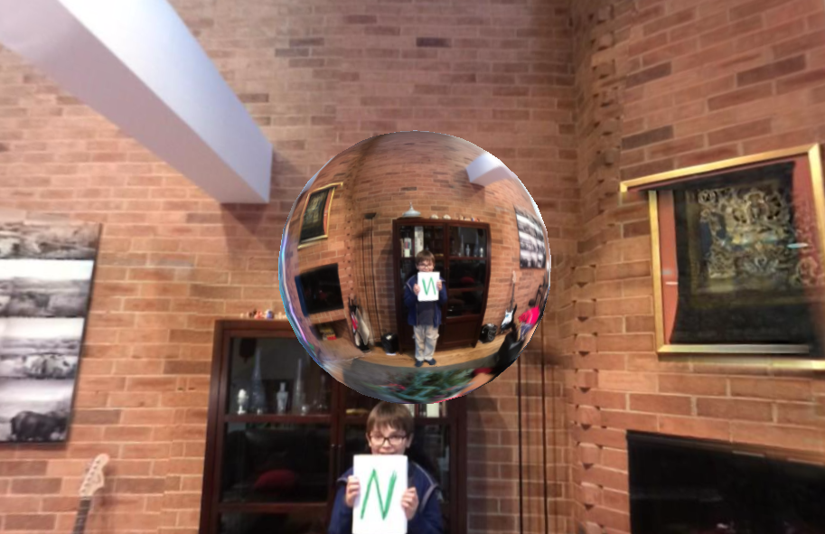

A window is a two-dimensional hole in a two-dimensional plane that allows you to see into a three-dimensional world. So what if we could make three-dimensional holes?
The original idea came from a three.js demo by altered qualia where he was demo’ing fresnel shaders:
{kind=link}
Fresnel Shader Demo
I didn’t care much about fresnel shaders, but was intrigued by the bubbles. I realized that rendering the outer sphere was not needed to render the bubbles:
{kind=link}
Bubbles Only
These bubbles are three-dimensional windows that can be taken anywhere. Spherical holograms.
{kind=link}
Spherical Holograms

To render the above image, you need 2 cameras, each one looking at a separate texture. Now look at this next image. If we flood Michigan avenue we need 2 cameras as well, one for the surrounding sphere, and one to capture the reflection as well.
{kind=link}
Flooded Michigan Avenue
We can view the scene of a flooded Michigan Avenue at home, via one of our holo-bubbles from above. The camera count is now 3, and you have to deal with the fact that while you want them all to turn in sync, some will need to be more wider angle than others.
We can make the inner camera have such a wide angle that it captures the zenith and the nadir, and the cursor both zooms and moves in space. It is a very sensitive. (Try it!).
This final image is one of the strangest I’ve made to date. Only one camera, with the sphere in the middle seemingly refracting the surroundings but even though the image is in the sphere is reversed it tracks the outer image as they rotate. How is this possible?

Most of the above images can and should be clicked to see the rendering in WebGL.
 Complex Surfaces
Möbius Transformations on Sph...
Complex Surfaces
Möbius Transformations on Sph...